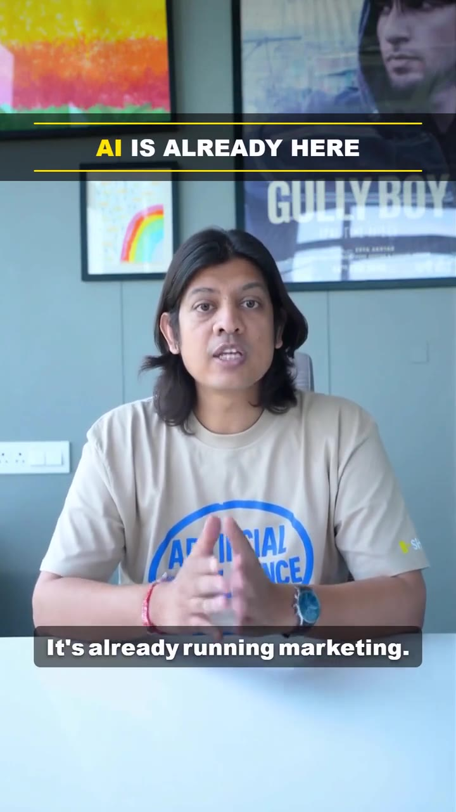

Product 01
Founder's digital avatar
You answer one message a day. Everything else posts itself.

Two taps
and a voice note.
- 01It arrivesTelegram, 7 am. Your niche, last 24 hours.
- 02You tap and talkOne point, a few seconds of you saying what you think. Your whole job.
- 03You say itYour face, your voice. Cut, graded, captioned, back in minutes.
- 04It is livePick where. It goes out before your first meeting.
Two taps and nine seconds of talking. A founder does that walking to the car.
One morning, start to finish
7:02
tg
toogoodbot
Today
Good morning. Four things moved overnight. Pick one and I will build the post.
- Rival. They shipped an AI-avatar ad. 400 comments, half of them calling it creepy.
- Platform. LinkedIn is pushing native video again. Reach on company pages is up this month.
- Data. New buyer study: 62% shortlist a vendor before they ever speak to sales.
- Yours. Tuesday's post crossed 11k. The comments are asking how you made it.
1
2
3
4
3
And your take? Just talk, a few seconds is plenty.
0:09
Got it.
Your angle
Not a video stat, a trust stat. People buy from a face they have already seen, and video is the cheapest way to be that face.
Writing it in your tone.
0:19
Ready. Where do you want it?
LinkedIn
Instagram
LinkedIn
Posted to LinkedIn. 07:26.
Posting the old way
40 min
a day, writing, shooting, editing, uploading
Posting with this
11 sec
one line, typed with your thumb
The hard part is not the video.
Anyone can generate a talking head. Almost nobody can generate one that sounds like you.
We spend the first stretch on how you argue, what you would never say, where you stop short. Get that wrong and it is a stranger wearing your face.
VoicePersonaAestheticEditorial line